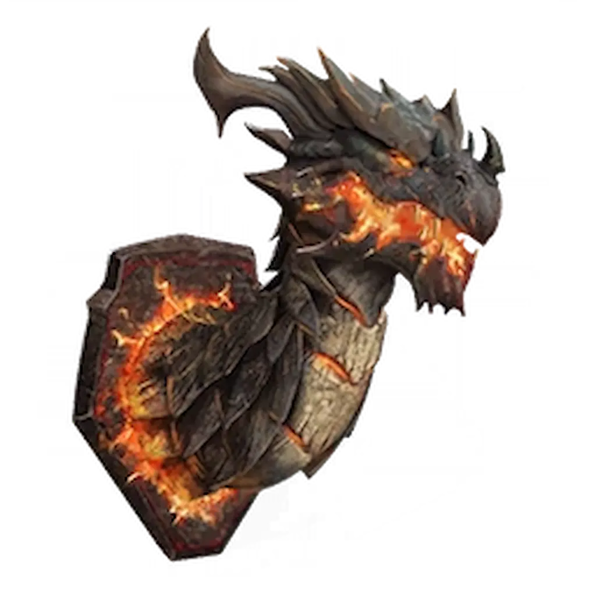

Musisz mieć ukończone główne zadanie w Ashes Of The Damned. Mecz musisz odpalić na poziomie Tier 2. Wyzwanie aktywuje się od rundy 60+.

Gdy usłyszysz demoniczny śmiech Mr Peaks po walce na 60. rundzie, czas na właściwą próbę:
Zasady walki wewnątrz portalu zmieniają się drastycznie – Twoje standardowe kule nic nie zdziałają:
Co on robi po aktywacji?